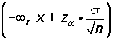

One Tailed Test
Case 1
The nule hypothesis is of the type H0: μ ≥ k (or H0: p ≥ k).
The alternative hypothesis, therefore, is of the type H1: μ < k (or H1: p < k).
Critical Values
| 1 - α | α | zα |
|---|---|---|
| 0.90 | 0.10 | 1.28 |
| 0.95 | 0.05 | 1.645 |
| 0.99 | 0.01 | 2.33 |


The significance level, α, is concentrated in one part or tail.
The limit of acceptance in this case is:

or:
Example
A sociologist has predicted that in a given city, the level of absenteeism in the upcoming elections will be a minimum of 40%. Of a random sample of 200 individuals from the voting population, 75 state they will likely vote. Determine with a significance level of 1%, if the hypothesis can be accepted.
1. State the null and alternative hypotheses:
H0 : p ≥ 0.40 The absenteeism will be a minimum of 40%.
H1 : p < 0.40 The absenteeism will be a maximum of 40%.
2. Calculate the limit of acceptance:
For a significance level of α = 0.01, the corresponding critcal value is: zα = 2.33.
Determine the confidence interval for the mean:

3. Verify:
4. Decide:
The nule hypothesis, H0, should be accepted as it can be stated with a confidence level of 1% that absenteeism will be at least 40% for the upcoming election.
Case 2
The nule hypothesis is of type H0: μ ≤ k (or H0: p ≤ k).
The alternative hypothesis is, therefore, of type H1: μ > k (or H1: p > k).
The significance level, α, is concentrated in one part or tail.
The limit of acceptance in this case is:

or:
Example
A report indicates that the maximum price of a plane ticket between New York and Chicago is $120 with a standard deviation of $40. A sample of 100 passengers shows that the average price of their tickets was $128.
Can the above statement be accepted with a significance level equal to 0.1?
1. State the null and alternative hypotheses:
H0 : μ ≤ 120
H1 : μ > 120
2. Calculate the limit of acceptance:
For a significance level of α = 0.1, the corresponding critical value is: zα = 1.28.
Calculate the confidence interval for the mean:

3. Verify:
The value of the mean of the sample is: $128.
4. Decide:
The nule hypothesis, H0, cannot be accepted with a significance level equal to 0.1.